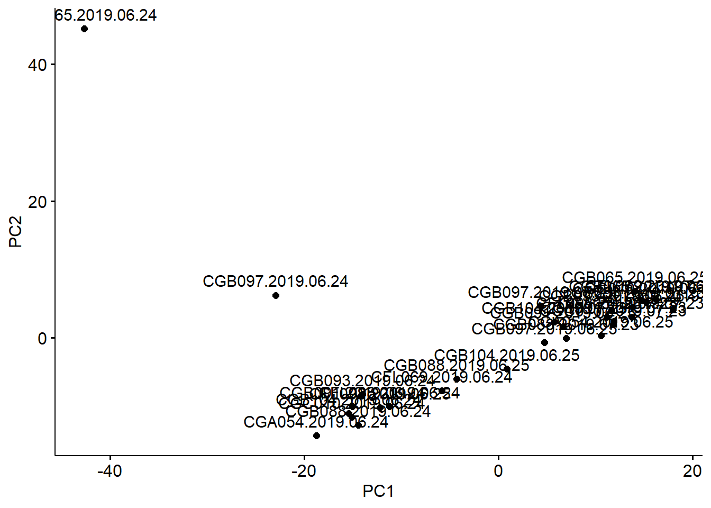
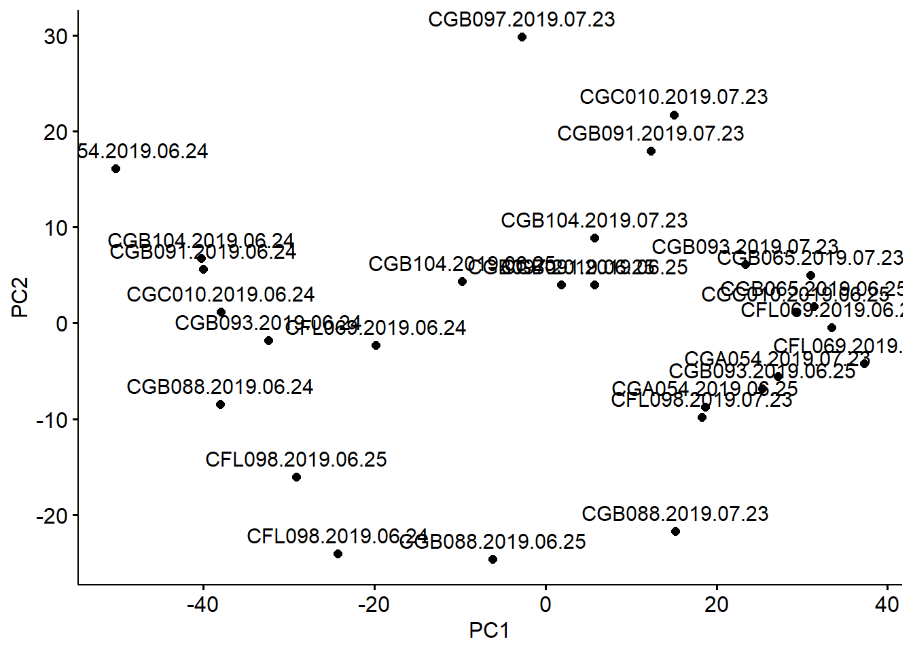
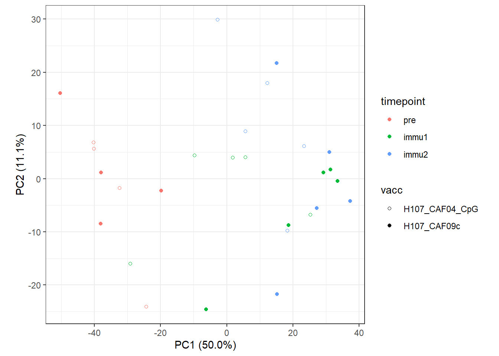
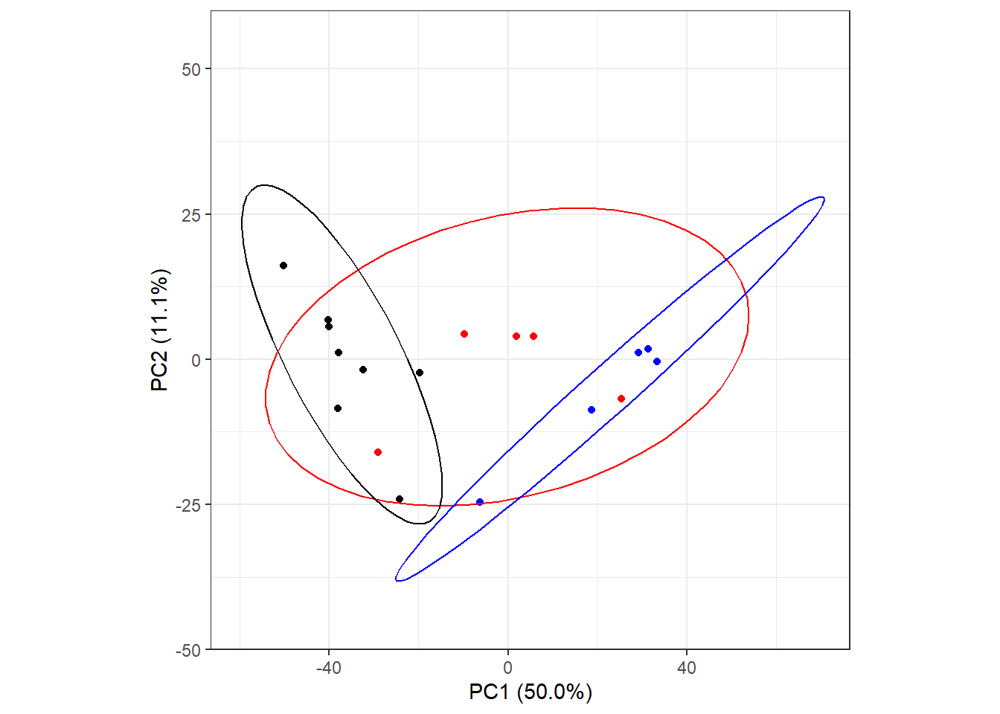
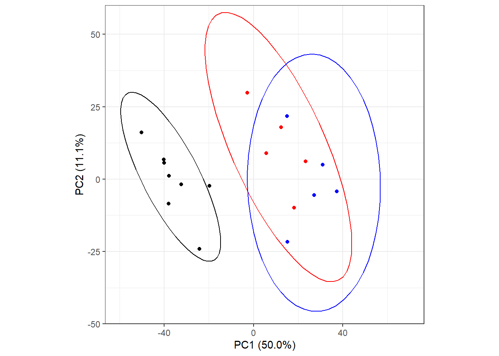

library(dplyr)
library(stringr)
library(tidybulk)
library(tidySummarizedExperiment)
library(biomaRt)
library(ggplot2)
library(ggpubr)RNAseq downstream analysis - data cleaning, QC, PCA analysis
Load package
Prepare the data
SummarizedExperiment
The .rds file was generated from the nextflow pipeline, which is already in the SummarizedExperiment object.
se <- readRDS("../data/salmon.merged.gene_counts.rds")
se# A SummarizedExperiment-tibble abstraction: 1,156,500 × 30
# [90mFeatures=38550 | Samples=30 | Assays=counts, abundance[0m
.feature .sample counts abundance files names gene_id gene_name
<chr> <chr> <dbl> <dbl> <chr> <chr> <chr> <chr>
1 ENSMFAG00000000004 CFL069.201… 2.00e0 0.319 CFL0… CFL0… ENSMFA… ENSMFAG0…
2 ENSMFAG00000000025 CFL069.201… 2.1 e1 1.78 CFL0… CFL0… ENSMFA… SKA1
3 ENSMFAG00000000028 CFL069.201… 1.1 e1 0.822 CFL0… CFL0… ENSMFA… SLITRK1
4 ENSMFAG00000000029 CFL069.201… 2 e0 0.131 CFL0… CFL0… ENSMFA… PNMA2
5 ENSMFAG00000000032 CFL069.201… 0 0 CFL0… CFL0… ENSMFA… SNORD113…
6 ENSMFAG00000000034 CFL069.201… 4 e0 0.749 CFL0… CFL0… ENSMFA… ENSMFAG0…
7 ENSMFAG00000000036 CFL069.201… 1.4 e1 0.550 CFL0… CFL0… ENSMFA… SLC5A5
8 ENSMFAG00000000037 CFL069.201… 4.47e3 255. CFL0… CFL0… ENSMFA… GRB2
9 ENSMFAG00000000038 CFL069.201… 7.83e2 15.3 CFL0… CFL0… ENSMFA… EEA1
10 ENSMFAG00000000039 CFL069.201… 2.79e2 32.5 CFL0… CFL0… ENSMFA… ID2
# ℹ 40 more rowsSample meta data
This dataset is rather small, thus I manually created the metadata.
metadata <-
tibble(sample_name = colnames(se)) %>%
mutate(animal = sample_name %>% str_extract("[:alnum:]{1,6}"),
sample_date = sample_name %>% str_extract("[:digit:]{4}\\.[:digit:]{2}\\.[:digit:]{2}"),
vacc = case_when(
animal %in% c("CFL098", "CGB091", "CGB093", "CGB097", "CGB104") ~ "H107_CAF04_CpG",
animal %in% c("CFL069", "CGA054", "CGB065", "CGB088", "CGC010") ~ "H107_CAF09c"
),
timepoint = case_when(
sample_date == "2019.06.24" ~ "pre", # pre-immunization
sample_date == "2019.06.25" ~ "immu1", # day 1 after immunization 1
sample_date == "2019.07.23" ~ "immu2" # day 1 after immunization 2
),
timepoint = factor(timepoint, levels = c("pre", "immu1", "immu2")))
col_data <-
metadata %>% tibble::column_to_rownames("sample_name") %>%
DataFrame()
colData(se) <- col_dataTo note, H107_CAF04_CpG is equivalent to CAF10b. H107_CAF09c is equivalent to CAF09hi . I kept them consistent in the figures and publication. But in my code, I did not harmonize them, in afraid of side-effects.
Gene annotation data
I generated gene annotation data (rowData of the SummarizedExperiment object) by querying ensembl. I used runonce::save_run to save the query results, because the connection to Ensembl is not always stable.
gene_data_Type <-
runonce::save_run(
{
ensembl <- useEnsembl(biomart = "genes",
dataset = "mfascicularis_gene_ensembl")
gene_data <- getBM(
attributes = c("ensembl_gene_id", "description", "gene_biotype"),
mart = ensembl)
gene_data_Type <-
rowData(se) %>% as_tibble(rownames = "rowname") %>%
left_join(gene_data, by = c("gene_id" = "ensembl_gene_id"))
gene_data_Type
}, "../data/gene_data_Type.rds"
)
rowData(se) <- gene_data_Type %>% tibble::column_to_rownames() %>% DataFrame()I kept only protein coding genes for downstream analysis.
se_pcoding <- se[rowData(se)$gene_biotype == "protein_coding", ] # protein coding genePCA (QC)
se_pcoding_scale_abundant <-
se_pcoding %>%
identify_abundant() %>%
scale_abundance()
rownames(se_pcoding_scale_abundant) <-
rowData(se_pcoding_scale_abundant)$gene_nameWe used this ugly PCA plot to detect outliers.
Two outlier samples were detected. We also checked the QC report generated by multiqc from the nextflow pipeline. These two samples showed distorted distribution of GC% content. After discussing with the sequencing service provider (Azenta Genewiz), we hypothesized that these two samples had incomplete depletion of globulin. Thus, we removed these two outlier samples for downstream analysis.
pca <-
se_pcoding_scale_abundant %>% reduce_dimensions(method = "PCA")
pca %>% pivot_sample() %>%
ggscatter(x = "PC1", y = "PC2", label = ".sample")
se_pcoding_scale_abundant_filtS <-
se_pcoding_scale_abundant[, !colnames(se) %in% c("CGB097.2019.06.24", "CGB065.2019.06.24")]saveRDS(se_pcoding_scale_abundant_filtS, "../data/se_pcoding_scale_abundant_filtS.rds")pca_filtS <-
se_pcoding_scale_abundant_filtS %>%
reduce_dimensions(method = "PCA", top = 1500)Getting the 1500 most variable genesFraction of variance explained by the selected principal components# A tibble: 2 × 2
`Fraction of variance` PC
<dbl> <int>
1 0.500 1
2 0.111 2tidybulk says: to access the raw results do `attr(..., "internals")$PCA`pca_filtS %>% pivot_sample() %>%
ggscatter(x = "PC1", y = "PC2", label = ".sample")
PCA (Story-telling)
Visualization (draft)
This was our first draft of visualization. The information was too complicated to comprehend. Thus, we fancied a better visualization below.
pca_data <- attr(pca_filtS, "internals")$PCA
variance_explained <- pca_data$sdev^2
proportion_variance_explained <- variance_explained / sum(variance_explained)pca_filtS %>% pivot_sample() %>%
ggplot(aes(x = PC1, y = PC2, color = timepoint, shape = vacc)) +
geom_point() +
coord_equal(ratio = 1) +
theme_bw() +
xlab(paste0("PC1 (", sprintf("%.1f%%", proportion_variance_explained[1] * 100), ")")) +
ylab(paste0("PC2 (", sprintf("%.1f%%", proportion_variance_explained[2] * 100), ")")) +
theme(aspect.ratio=1) +
scale_shape_manual(values = c(1, 16, 17))
Visualization (publication)
g_immune1 <-
pca_filtS %>% pivot_sample() %>%
filter(timepoint != "immu2") %>%
mutate(timepoint_vacc = paste(timepoint, vacc),
timepoint_vacc = case_when(timepoint == "pre" ~ "pre",
.default = timepoint_vacc)) %>%
ggplot(aes(x = PC1, y = PC2, color = timepoint_vacc, fill = timepoint_vacc)) +
geom_point() +
stat_ellipse(type = "t") +
coord_equal(ratio = 1, xlim = c(-60, 70), ylim = c(-45, 55)) +
theme_bw() +
theme(aspect.ratio=1, legend.position = "none") +
scale_shape_manual(values = c(1, 16, 17)) +
scale_color_manual(values = c("red", "blue", "black")) +
xlab(paste0("PC1 (", sprintf("%.1f%%", proportion_variance_explained[1] * 100), ")")) +
ylab(paste0("PC2 (", sprintf("%.1f%%", proportion_variance_explained[2] * 100), ")"))
g_immune1
ggsave("../data/figure/pca_immune1.png", g_immune1, dpi = 500,
width = 5, height = 5, scale = 0.8)g_immune2 <-
pca_filtS %>% pivot_sample() %>%
filter(timepoint != "immu1") %>%
mutate(timepoint_vacc = paste(timepoint, vacc),
timepoint_vacc = case_when(timepoint == "pre" ~ "pre",
.default = timepoint_vacc)) %>%
ggplot(aes(x = PC1, y = PC2, color = timepoint_vacc, fill = timepoint_vacc)) +
geom_point() +
stat_ellipse(type = "t") +
coord_equal(ratio = 1, xlim = c(-60, 70), ylim = c(-45, 55)) +
theme_bw() +
theme(aspect.ratio=1, legend.position = "none") +
scale_shape_manual(values = c(1, 16, 17)) +
scale_color_manual(values = c("red", "blue", "black")) +
xlab(paste0("PC1 (", sprintf("%.1f%%", proportion_variance_explained[1] * 100), ")")) +
ylab(paste0("PC2 (", sprintf("%.1f%%", proportion_variance_explained[2] * 100), ")"))
g_immune2
ggsave("../data/figure/pca_immune2.png", g_immune2, dpi = 500,
width = 5, height = 5, scale = 0.8)